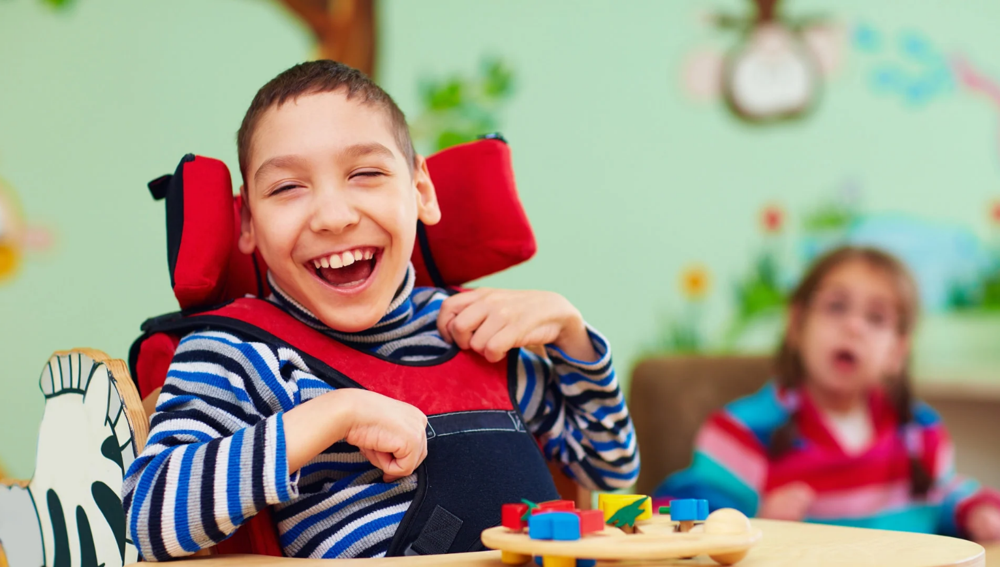

Conoce los cuidados necesarios para tratar niños especiales

LLENEMOS SUS DIAS DE FELICIDAD
No importa qué tan despacio aprende un niño los importante es apoyarlo siempre
La comunicación es clave
Hágale saber a su hijo que no hará esto solo. Asegúrele que los cambios suelen hacer sentir nerviosas a muchas personas, incluso a usted, pero que una nueva escuela o entorno puede significar también diversión y nuevos amigos. Pida a otras personas (familiares, amigos, terapeutas, niñeras) que hablen también con su hijo acerca de la emoción y la ansiedad que provoca probar cosas nuevas. “Cuanta más información se pueda dar al niño —dice Wombles— más se sentirá él en control de la situación. Es importante hacer que se sientan cómodos, así como ayudarlos a imaginar variaciones en el plan para que sepan qué hacer si algo no sale como estaba previsto”.
No tiene que exagerar con frases como “te va a encantar tu nueva escuela”, pero puede ayudar a su hijo a centrarse en las cosas buenas del cambio, y al mismo tiempo reconocer que seguramente va a extrañar a sus antiguos amigos. (Si lo considera pertinente, asegúrele que usted programará citas de juegos con ellos). Hágale saber lo orgulloso que está de él y cómo este nuevo entorno lo va a ayudar con sus fortalezas (y debilidades).
Obviamente, esto es más fácil de hacer cuando usted acepta el cambio. Tal vez usted está enojado y tiene resentimientos hacia la antigua escuela porque le dijeron que su hijo no puede quedarse, lo que podría haber conducido a una colocación más restrictiva, y puede que usted lo esté viendo como un retroceso. Pero si tiene algún sentimiento negativo, guárdeselo para usted: es injusto cargar a su hijo con sus propias emociones
Como evaluar a los niños con necesidades especiales
Organice citas de juegos antes de que empiece la escuela
Normalmente, los niños que asisten a la escuela local ya tienen amigos, o al menos reconocen caras familiares cuando entran en sus nuevos salones. Pero muchos niños y adolescentes con necesidades especiales tienen que desplazarse a escuelas fuera de su barrio, por lo que no tienen esa ventaja...
¿Quieres apoyar, este proyecto?
Dejanos tus datos nos pondremos en contacto contigo, te dire como puedes ayudarnos